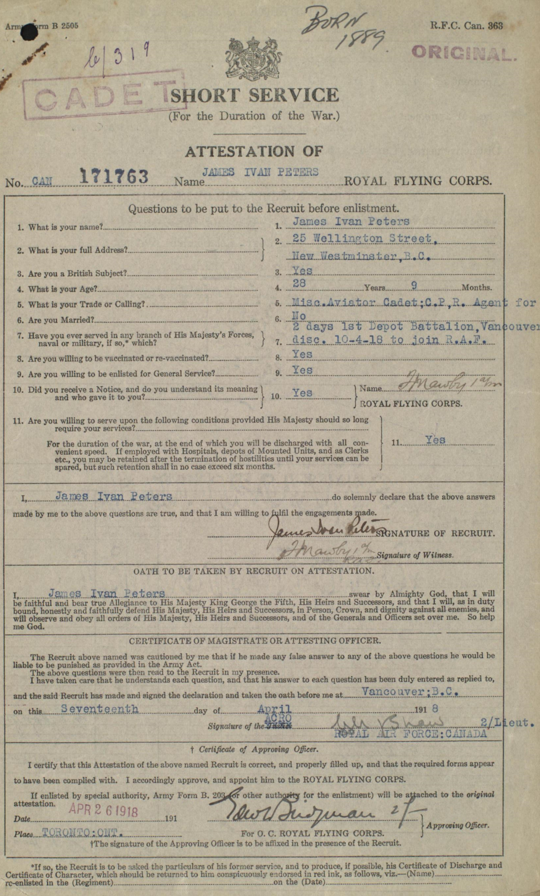
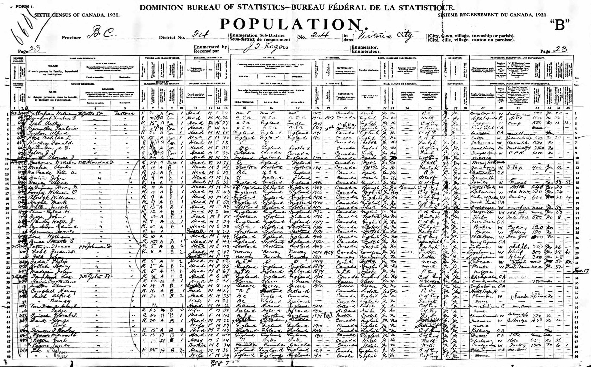
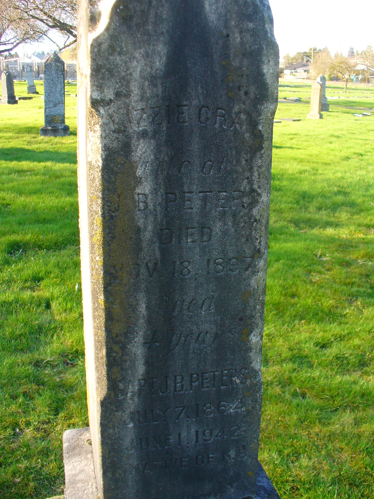
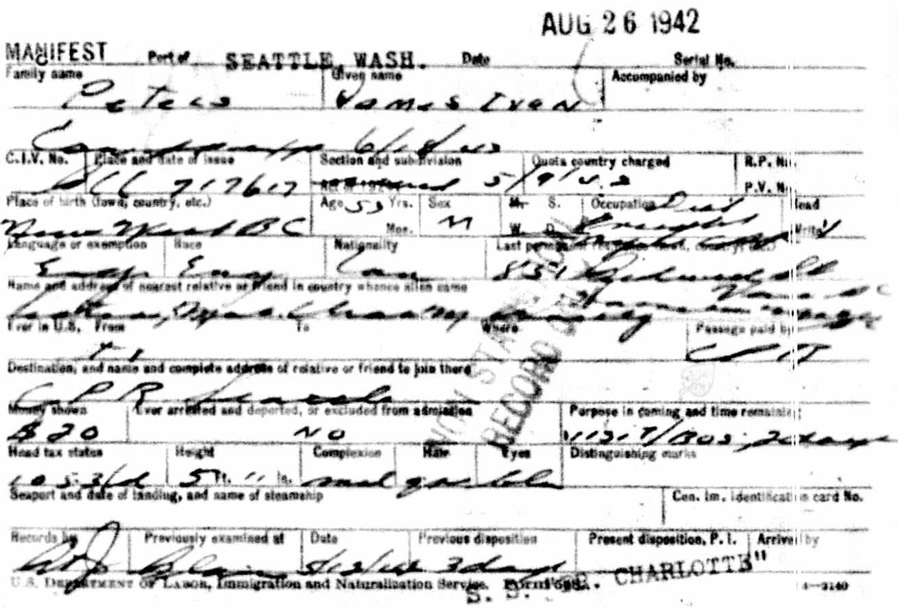
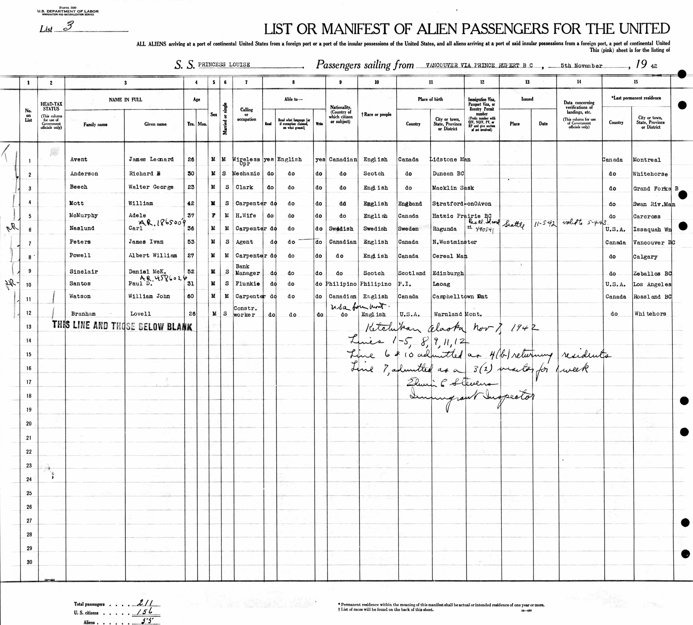
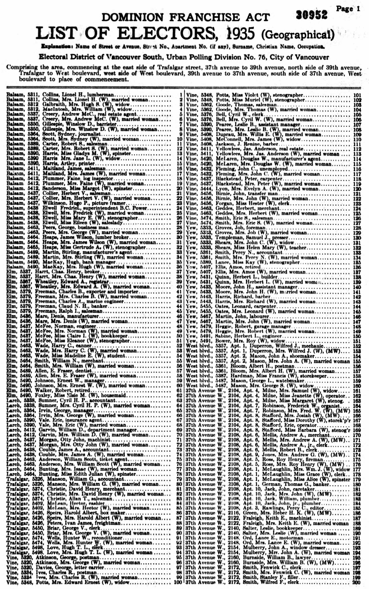
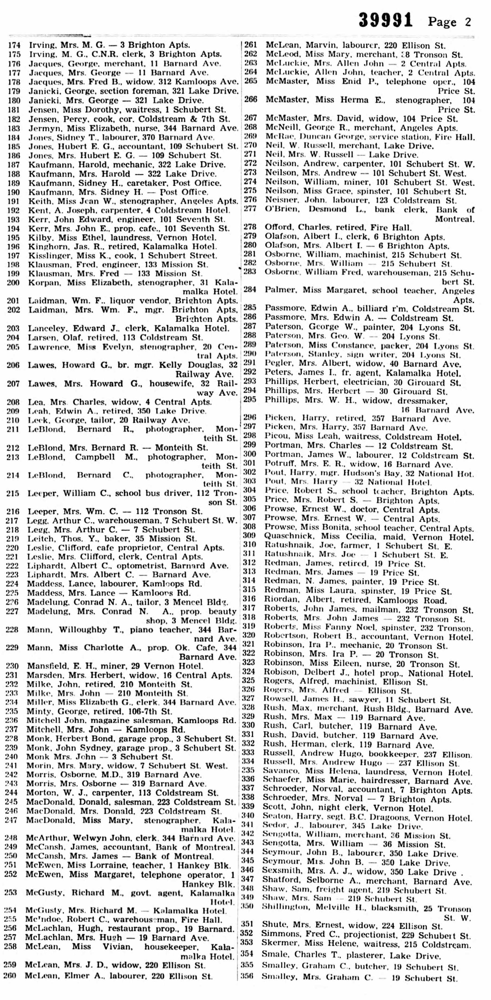
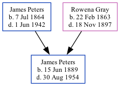

James Ivan Peters 1889 - 1954
[ Home ] | [ Calendar ] | [ Surnames Index ] | [ Family History ]A railroad agent and the older of 2 children of James Peters and Rowena GrayJames Peters, the fourth cousin once-removed on the father's side of Nigel Horne, was born in New Westminster, British Columbia, Canada on Jun 15, 18891,2,3,4,5,6.
Throughout his life, James lived in several places: in Prince Rupert, British Columbia, Canada in 19175; at 25 Wellington Street, British Columbia on Apr 17, 1918 (the same place as his father had been living in 1911); at 716 Yates Street, Victoria, British Columbia on Jun 1, 19211; in Vancouver, British Columbia, Canada in 1935; and at Kalamalka Hotel, Yale, British Columbia in 1940. During 1918, he was serving in the military (royal Flying Corps - service number 171763). During 1942 he arrived in Seattle, King, Washington, USA on Aug 26 and Ketchikan, Alaska, USA on Nov 5.
He died on Aug 30, 1954 in Vancouver3,4,6,7 and was buried in Burnaby, British Columbia, Canada after Aug 30, 19544,6.
Parents
- James Bedford was born on Jul 7, 1864
- Rowena Elizabeth was born on Feb 22, 1863
Citations
- 1921 Census of Canada Ancestry.com Operations Inc (Marital Status: Single; Relation to Head of House: Head)
- British Columbia, Canada, Birth Index, 1872-1903 Ancestry.com Operations Inc
- British Columbia, Canada, Death Index, 1872-1990 Ancestry.com Operations Inc
- Canada, Find A Grave Index, 1600s-Current Ancestry.com Operations, Inc.
- Canada, Soldiers of the First World War, 1914-1918 Ancestry.com Operations, Inc.
- Web: International, Find A Grave Index Ancestry.com Operations, Inc.
- British Columbia, Canada, Death Index, 1872–1992 - Findmypast
Media
James Peters - Royal Flying Corps

James Peters - 1921 census

James Peters - gravestone

James Peters - arrival in Seattle

James Peters - arrival in Alaska

James Peters - 1935 voters list

James Peters - 1940 voters list

British Royal Air Force, Airmen's service records 1912-1939 Image - GBM-AIR79-1553-00131
British Columbia, Canada, Birth Index, 1854–1903 Transcription - US-MCV-101185-01454980693878524112
British Columbia, Canada, Death Index, 1872–1992 Transcription - US-MCV-126823-03719465579911091183
Canada Census 1911 Transcription - CAN-CENSUS-1911-00395717
British Columbia, Canada, Death Index, 1872–1992 Transcription - US-MCV-126823-0371946557991109
Family Tree
Generated by ged2site. Last updated on Nov 13, 2024